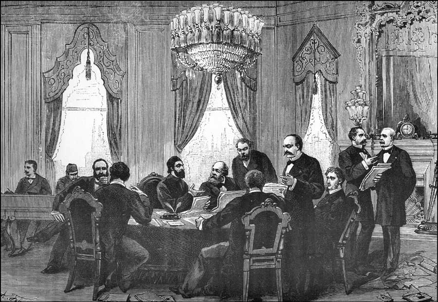
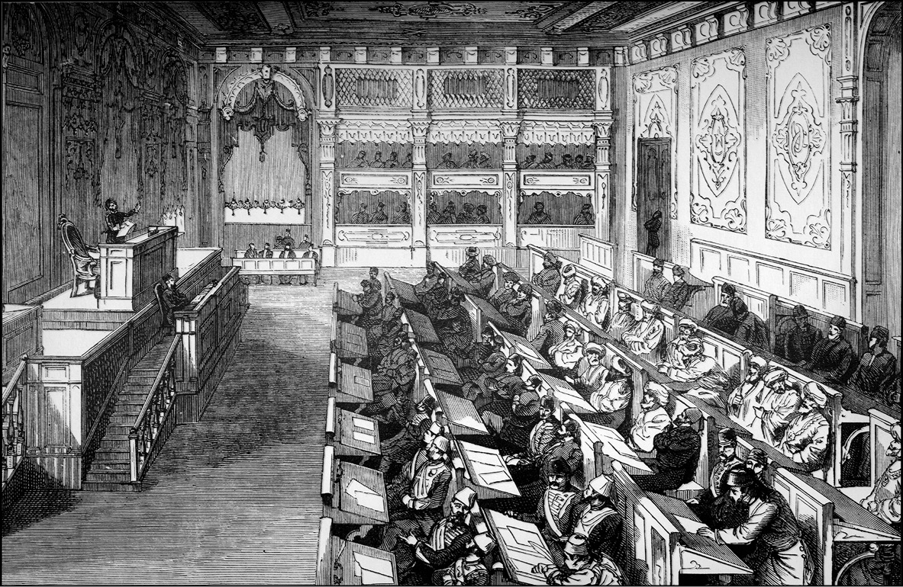
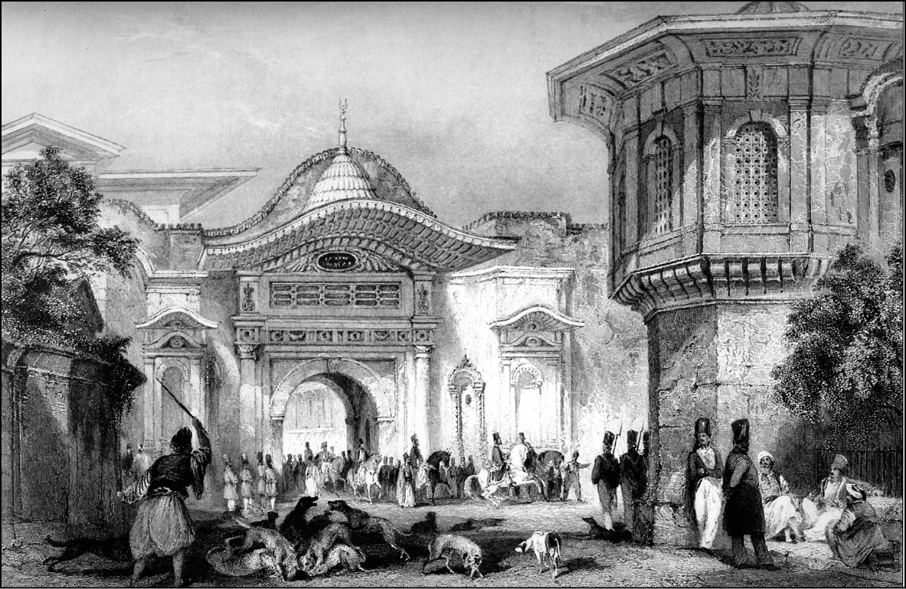

18. YÜZYIL AVRUPASI’NDA DEĞİŞEN DEVLETLER DENGESİ
18. yüzyılın Akdeniz dünyası ve Avrupa devletler dengesi bir hayli değişmiştir. Avusturya ve Almanya İmparatorluğu dediğimiz bölge bilhassa Türklerin fetih devrimi ve 1683-1699 arasındaki gerilemesinden sonra bugünkü Macaristan’ı, Erdel’i, Slovakya’yı ve Adriyatik’e kadar olan kısmı sınırlarına katmıştır. Buralarda manüfaktürün geliştiğini görürüz. Hollanda, Almanya ve İngiltere’den gelen yatırımcılar, müteşebbisler yeni sanayi ve manüfaktür dalları kurmaktadırlar ve Avusturya Akdeniz ticaretine katılmaktadır. Dahası var, Avusturya veraset yoluyla Toscana Büyük Dükalığı’nı eline geçirmiştir.
Toscana Büyük Dükalığı demek, hepimizin bildiği bütün haşmeti, zerafeti ve inceliğiyle birlikte, Floransa’nın sanatları, dokumaları, müteşebbis sınıfı, tüccarları demektir. Bunların Avusturya tebaası olduğunu tasavvur edelim. İktisadî hayatta en büyük zenginlik nitelikli emektir ve onun daha kapsamlı, kârlı çalışanı da teşebbüs demektir.
Nitekim Avusturya 1727’de korsanlık faaliyetlerini önlemeye yönelik seyrüsefain, yani gemi ticaret ve ulaşım anlaşmalarıyla, ayrıca bir konsolosluklar ağının teşekkülüyle birlikte Garb ocakları diye bilinen Cezayir, Tunus ve bugün Libya dediğimiz Trablusgarb bölgesinde ve Doğu Akdeniz’de ticarete açılmıştır. Yoksa bu anlaşmalara gelinceye kadar, korsanlık devletlerin desteğinde gerçekleştirilen resmî bir faaliyetti. Demek ki 1727’den itibaren Avusturya Akdeniz’in bu bölgesindeki ticarete açılmıştır.
Öte taraftan bugünkü Bulgaristan ve Makedonya taraflarında, yani bütün Tuna mansabında, Eflak beyliğinde de aynı şekilde ticarî bağlarını kurmuştur. Birdenbire Bulgaristan’ın iktisadi hayatı içinde mesela abacılık ya da hammadde dokumacılığı gelişmekte, dericilik gibi dallar inkişaf etmektedir. O kadar ki Bulgar milli tarihçileri 18. yüzyılı belki biraz abartmayla da olsa ülkelerinin Rönesansı diye adlandırmaktadırlar. Hakikaten şehirlerde hayat gelişmektedir. Kırsal alanlarda çiftlikler teşekkül etmektedir. Çok ilginçtir bu çiftliklerin ve bu zenginliğin yarattığı yeni bir siyasî yapılanma ortaya çıkmaktadır.
Mesela Pazvantoğlu, Vidin’de ortaya çıkmıştır. Bu yerel beylerin çoğu eski Osmanlı asker, kapıkulu ve yöneticilerdir. Buralarda eski Türk idaresi mevcuttur. Osmanlı idaresinin sancak beyleri tarafından veya sancak beylerinin, valilerin yanındaki kul sınıfı dediğimiz levent ve yeniçerilerin içinden çıkma komutanlar tarafından örgütlenmiş kuvvetlerle bu vilayetlerin, bu livaların yönetimini mütesellim olarak ele geçirenlerin kurduğu yeni bir düzen söz konusudur. Çoğu zaman tarihimizde bunu bir başıbozukluk dönemi diye okuruz. Halbuki doğru değildir.
Viyana Kuşatması’ndan sonra devletin eski asayişi, müdafaa düzeni sarsılmıştır. Bu boşluğu doldurmak için merkezin müdahalesi gecikmekte veya acemice kalmaktadır. O zaman âyan sınıfından gelme birtakım yerel komutanlar mütesellim olarak, İngilizce tabiriyle custody protector olarak ortaya çıkmaktadır. Eski paşaların kul takımının, muhafızlarının içinden çıkma ve yerel politikacılar da diyebileceğimiz bu becerikli kimseler yerel yönetimi bir şekilde ele geçirmektedir. Bu gibi ailelerin sayısı çoktur. Anadolu’dan gitme “at ağası”, Suriye’de meşhur Attasi ailesi olmuştur. Hatta Mersin’den çıkma bir Hıristiyan ailesi olan Sursuklar, bu yeni gelişen bölgelerde mesela Cebel-i Lübnan’da büyük araziler satın almakta, para ticaretiyle zenginleşmekte ve o ülkenin tarihinde yerini almaktadır.
Daha sonraları II. Mahmud devrinde Yanya Paşası Tepedelenli’nin –ki tamamıyla Anadolu’dan gitme bir gençtir– oradaki Arnavut, Rum, Türk mahallî kuvvetleri biraraya getirerek Yanya ve civarında adeta hükümranlığını ilan ettiğini görürüz. Bu nasıl oluyor? Kuru zorbalıkla mı? Hayır. Bir yerde asayişi sağlıyor. En mühim şey insanların güven içinde yaşamasıdır. İkincisi, vergi alıyor. Bu vergiler belki çok hafif değil ama belirgin. Herkes ne verdiğini, vereceğini biliyor. Üçüncüsü, gerekli bayındırlık eserleri, yollar, köprüler yapılıyor. Merkezî hükümetin çoktan beri ihmal ettiği şeyler tamamlanıyor. Camiymiş, imaretmiş, çökük haldeki medresenin tamiriymiş, buradaki softaların giderlerinin karşılanmasıymış, bütün bunlar yapılıyor. Sadece Müslümanlar için değil, Hıristiyanlar için de manastırların güvenliğinin sağlanması, muafiyetlerine hürmet edilmesi, hatta ihtiyaç varsa tamirat yapılması gibi işler görülüyor. İşte bütün bunların sonucunda, Rumeli’de adem-i merkeziyetçi, merkezin iktidarından kaçan yeni gelişmeler göze çarpıyor, hiç şüphesiz ki bunlar 19. asırda II. Mahmut devrinde sona erecektir.

İstanbul Konferansı’nda bir oturum.
Ama bunlar, 18. asır için önemli gelişmelerdir. Dahası vergileri toplayanların kendi başlarına hareket etmeleri önlenmiş oluyor. Ve bir nevi malî belirlilik dönemine giriliyor. Fransa’da 17. asırda, özellikle Kardinal Richelieu zamanında bir malî merkeziyetçilik ortaya çıkmış ve öncül bütçe tertiplenmişti. Buna benzer bir gelişme oluyor. Bu Osmanlı maliyesinde önemli bir değişikliktir. Henüz ne olduğunu tam bilmiyoruz. Ama şunu söylemek gerekir ki, başta Mehmet Genç üstadımız olmak üzere, Yavuz Cezar gibi, Murat Çizakça gibi arkadaşların araştırmalarıyla bu malî dönem aydınlanmaktadır.
İmparatorluğun eski malî yapısı değişmektedir. 19. yüzyılda bir tür malî adem-i merkeziyetçilik sistemi gelmektedir. Merkezden kopukluk giderilecek ve sonra maliyede merkezileşme süreci başlayacaktır. Tabii bu çok uzun sürmüş, hatta gelişimi günümüze kadar devam etmiştir. Türkiye maliyesinin tam modern anlamda merkezileşmesi, vergi matrahının, nereye vergi konacağının tespiti, vergilerin toplanma işinin düzgün ve sabit kalemler halinde devam etmesi gibi bir sürece henüz girilmiştir.
Bir yandan da Akdeniz ticareti hem ülkedeki hammadde kaynaklarına girmekte, hem de yarı mamul maddeyi de çekmektedir. Artık güherçile bir tür temizleme işleminden geçirilerek, işlenerek yollanıyor. Bazı stratejik maddelerin satışı yasak olmasına rağmen buna uyulmuyor. Nüfusu iki misli arttığı halde gıda üretimi hemen hemen sabit kalan Britanya adalarının buralardan geçineceğine, tahılını meyvesini buradan götüreceğine hiç şüphe yoktur. Derece derece Hollanda, hatta Fransa gibi ülkeler için de bu söz konusudur.
Tabii o zaman bu kaçak ticaretle zenginleşen yerel insanlar göze çarpar. Bu durum imparatorluğun hemen bütün eyaletlerinde görülür. Ama onun yanı sıra artık Batı’ya yarı mamul maddeler yollayanlar da vardır. Bulgaristan aba üretimi ile zenginleşir. Eflak’tan kereste ihraç edilir. Sırbistan’dan yine aynı şekilde yün dokunarak gönderilir. Anadolu’da da bu böyledir. Artık tiftik kumaşı soflar değil, ama tiftik yünü ihraç edilir. Karadeniz kıyılarından gider, Akdeniz kıyılarından gider. Cebel-i Lübnan’da ipek dokuyan manüfaktür merkezleri ortaya çıkar. Şam’da, Haleb’de Avusturya tebaası İtalyanlar görüyoruz. Bunlar ne yapıyorlar? Mamulâtı toplayıp götürüyorlar. İzmir’de zenginleşen bir Levanten sınıfı var. Bunların çoğu İtalyan, Fransız, Hollanda asıllı. Önceleri aralarında İtalyanca konuşurken sonra Fransızca’ya dökmüşlerdir. Ege adalarındaki Rumlar fakir adalarını bırakarak bu zengin bölgeye göç etmeye başlamışlardır.
Yani Ege bölgesinin Hellen nüfusu bazılarının zannettiği gibi Büyük İskender ve Perikles devrinden kalma değildir. Bunlar doğrudan doğruya bugünkü Yunan adaları dediğimiz Ege adalarından göçüp gelen fakir köylülerdir ki çok gayretli ve çalışkandırlar. Onları çeken bereketli toprak sayesinde zenginleşmektedirler. Bu bir iç göçtür. İç göçle Kıta’nın Yunan adetleri ve ulusçuluğunu da birlikte getirmişler; İzmir Hellenleri İstanbul gibi değil, daha koyu Hellen miliyetçisiydiler...
İmparatorluğun içinde olan bir göçtür. İdare için problem değildir. Şimdi bu zenginliklerle yeni merkezler ortaya çıkmaya başlamaktadır ve 18. yüzyıldaki bu zenginleşme yerel güçleri beslemektedir. Her yerde birtakım aileler göze çarpmaktadır: Musul’da Kotalhalilzadeler; Suriye’de Attasiler; Rumeli’de Pazvantoğlu. Yerel hanedanlar da ortaya çıkmaktadır. Öyledir ki, nihayet III. Selim’i desteklemek ve IV. Mustafa’yı devirmek üzere Alemdar Mustafa Paşa adlı bir âyan etrafına başka âyanların da ordularını toplayarak İstanbul’a yürür. IV. Mustafa’nın tahttan indirilip III. Selim’in tekrar tahta çıkarılması söz konusu iken, IV. Mustafa amcazadesi III. Selim’i o anda ortadan kaldırmış, hatta Şehzade Mahmud’u da öldürtmek üzereyken, harem kadınlarının savunması sayesinde şans eseri kurtulmuş ve Osmanlı hanedanının kalan son vârisi II. Mahmud olarak tahta geçmiştir.
Bazı anayasacılarımız kolay benzetmelerle adeta 1215 İngilteresi’ndeki Magna Carta olayıyla 1809 Sened-i İttifakını mukayese ederler. Oysa 1800’lerin başında Rumeli’de merkezle çokça yapılan sözlü veya yazılı ittifakların bir benzeri, bir devamı olduğu anlaşılmaktadır. Fakat artık bıçak kemiğe dayanmıştır. Osmanlı bu tip yerelliği, yerinden yöneticiliği kabul edemez. Nitekim yıllarca senetin II. Mahmud tarafından arşivden yok edildiği konuşulmuştur ama Prof. Dr. Ali Akyıldız, senetin tam metnini “Osmanlı Bürokrasisi ve Modernleşme’ isimli kitabında yayınlamıştır. Çevdet Paşa “Tarihi”nde de bu metin vardır. Bu hadisenin ardından önce Alemdar Mustafa Paşa’nın yeniçeri isyanıyla yok edilmesine göz yumulmuş ve o iş bittikten sonra bu sefer yeniçerilerin üzerine yürünmüş, Yeniçeri Ocağı ortadan kaldırılmıştır. Ve Anadolu’da müthiş bir operasyon zinciri ile Yozgat’ta Çapanoğlu, Rumeli’de Pazvantoğlu, Tepedelenli Ali Paşa gibi sayısız âyan devletin otoritesine teslim olmuştur. Teslim alınamayan tek adam, galiba gene Anadolu kökenli olup da biraz yanlış bir şekilde sonraki mekânıyla adlandırılan Kavalalı Mehmed Ali Paşa’dır. Mısır gibi zengin teşkilatlı bir ülkenin başına yerleşmiş ve kafa tutan bir vali olmuştur.
Nedir bu 18. yüzyıl dünyası? 18. yüzyıl dünyasında İtalya artık tarihi görevini çoktan tamamlamıştır. Şurası bir gerçektir: Venedik ve Cenova’nın hâkimiyetini yok eden Türk ilerlemesidir. Fatih Sultan Mehmed gibi bir cihangirin kurduğu imparatorluk kısa zamanda Balkan sınırlarını aşmış, Bosna’yı kapsamış, bugünkü Romanya’ya, Eflak ve Boğdan’a sıçramış, diğer taraftan Pontus İmparatorluğu ortadan kaldırılıp Kırım ele geçirilerek Karadeniz hâkimiyeti tesis edilmiş ve ardından da Kanunî’nin Rodos fethiyle Akdeniz’deki Venedik-Cenova hâkimiyeti önemli darbeler yemiştir.

Osmanlı parlamentosu.
16. asırda Kıbrıs’ın düşmesi, 17. asırda Girit’in Venedik’ten alınmasıyla İtalya’nın bu parlak deniz cumhuriyetleri ömürlerini tamamlamışlardır. 18. asırda bu eski parlak devletlerden, yani Toscana’dan, Cenova’dan, Venedik’ten geriye sadece adları, sanatları ve kültürleri kalmıştır. Artık vatanlarında ekmek bulamayan insanlar Avrupa’nın içlerine dağılmışlardır. Giacomo Casanova’nın, hepimizin çapkınlıklarıyla tanıdığımız bu Venediklinin asıl işi bile bu durumu ifade etmektedir: Casanova, Bohemya’da bir dükün şatosunda kütüphanecidir.
18. asrın İtalyan bestecisi, istediği kadar ünlü olsun, ekmeğini vatanında değil Avrupa içlerinde, Viyana’da bulur. İşte size ünlü Antonio Salieri. Aslında Mozart’ın hayat hikayesinin anlatıldığı “Amadeus” filmindeki kadar günahkâr ve çamur atılacak biri değildi. Viyana’yı Viyana yapan ustalardan biriydi. Musiki tarihçileri Viyana’nın bu tip İtalyan ustalar sayesinde bir musiki merkezi olduğunu teslim ediyorlar. Mesela Beethoven şehre, ancak Viyana Viyana olduktan sonra gelenlerdendir; yoksa Viyana’yı Viyana yapanlardan değildir. Bu dönemde İspanya da eski İspanya değildir. Akdeniz’de az gelişmiş, çöken bir imparatorluğu temsil etmektedir. Ve bu yönü ile de Osmanlı İmparatorluğu’na çok paralel bir görünümü vardır.
Yavuz Sultan Selim ve Şah İsmail arasındaki Safevi döneminde olan savaşlardan sonra İran, 18. yüzyılda belini doğrultamamıştır. Asıl önemli özelliği merkeziyetçi askerî ve bürokratik yapıya geçememesidir. Gene bir Türk imparatorluğu olan Afşar hanedanının kurucusu Nadir Şah döneminde Afganistan ve Hindistan’a kadar uzanmış ve hatta orada kısa bir hâkimiyet kurmuşsa da imparatorluğun bu yapısı devam eder. Bu hâkimiyetin sembollerinden biri bugün Topkapı Sarayı’nın hazinesinde bulunan ve Şah İsmail tahtı diye tanıtılan güzel eserdir. Oysa yağmalanan Hindistan’dan ganimet diye alınan ve sonraki yıllarda Osmanlı tahtına diplomatik hediye olarak gönderilen bu tahtın Şah İsmail’le alakası yoktur. 18. yüzyılın İranı bir Hint ve İran karışımıdır. Sanatlar zirvesindedir. Şairler en kalabalık zamanındadır. Ama artık eski güçleri yoktur. Ayrıca modern dünyaya uyamamanın bütün görünümleri de mevcuttur.
Osmanlı Türkiyesi ise aksine birtakım sanatları İran’dan almaktadır. Osmanlı başkentini Fransa’nın bahçe mimarları, İtalya’nın barok zevki, hatta Latince, Yunanca bilgileriyle Dimitri Kantimir gibi entelektüellerin merkezdekilerle bir araya gelmesi süslemektedir. Kısacası 18. yüzyıl, merkezîleşen, modernleşen, teknolojisi büyüyen Avrupa’ya uyum sağlamaya başlayan bir Osmanlı’nın tarihidir. Bizim mektep kitaplarımızda anlatılan çöküntüye gelince, evet sınırlar gerilemekte, ama öte yandan cemiyet kendisini yenilemektedir. Ve doludizgin değilse de, ayakta kalmak bilinciyle 19. asra yürüyen ve ileride de dünyaya intibak edebilecek bir milletin ve tarihinin hazırlık safhası söz konusudur.
OSMANLI’DA HUKUK SİSTEMİ
Hiç şüphesiz dünya hukuk tarihinin en önemli sorunsallarından biri, Türklerin geçirdiği hukuk reformlarıdır. Hukuk reformu diyoruz, aslında yeryüzündeki her toplum hukuk sistemini ve kurallarını zamandan zamana değiştirir. Bu değişiklik kaçınılmazdır. Ama Türkler kadar hukuk sistemlerini, hukuk metinlerini, hukuk uygulamalarını bilinçli olarak değiştiren cemiyet pek azdır.
Sözünü ettiğimiz değişimin adı da maalesef yanlış konmaktadır. Genellikle İslam hukuk sistemi’nden Avrupa hukuk sistemi’ne sanki genellikle birkaç yılın içinde bütün bir hukukî uygulamayı ve mirası bir tarafa koyup ötekine geçmişiz gibi bir intibaa vardır.
Dahası bunun grotesk diyebileceğimiz tarihî betimlemeleri görülür. Yani Türk toplumu anında ve de bir gece içinde birbirine tamamen zıt iki dünyanın birinden öbürüne geçmiş gibidir. Bunların hakikatle bağdaşır yanı yoktur; çünkü Osmanlı toplumu dinamik bir toplumdur. Kendine özgü şartlar içinde yaşamaktadır. İslam dinine ve medeniyetine girdiği zaman Türk toplumunun kendine özgü davranışları, kendine özgü bir hukuk sistemi vardır.

Bab-ı Ali. Thomas Allom.
Kaldı ki İslam’ın bile Ortadoğu toplumları ile karşılaşması esnasında çok önemli yeni ictihadlar ortaya çıkmıştır ve eski imparatorluklardan en azından arazi, vergi sistemi, maliye idaresi yönünde çok önemli müesseseler ve prensipler alınmıştır. Zaten İslam hukukunun ilginçliği de bu gibi ictihadlara cevap vermesi, İslam inançlarına ters düşülmediği takdirde bu tip başarılı uygulamaları kabul etmesidir. Osmanlı toplumunun klasik devir diyebileceğimiz 19. yüzyıla kadar olan döneminde hiç şüphesiz ki aile hukuku, yani nikâh, miras taksimi, veraset ve evlilik, boşanma gibi konularda İslam hukuk prensipleri yürürlükte kalmıştır.
Bu prensipler üzerindeki renklilikler en azından caridir. Zaman zaman büyük İslam hukukçuları’nın koyduğu ictihadlara ters uygulamalar da, doğrusu görülmektedir. Mesela, evlilikten önce alınan başlık veya namzet akçesi gibi paraların İslam hukukunun mehir hükümleri ile alakası yoktur. Ama bunlar kuvvetli bir eski anane olduğu için ortadan kaldırılamamış ve bir nevi uzlaşma yoluna gidilmiştir. Ceza hukuku alanındaki İslam hükümlerinde de bir yumuşama görülmektedir. Nitekim Osmanlı ceza hukukunda siyaset veya idam gibi cezalar çok sık verilmez. Diyet, tazminat gibi çözümlere sapılır. Bunlarda doğrusu üniversal bir uygulama, uzlaşma çabası görülmektedir.
İnancın ve İslam cemiyetinin esas unsurlarıyla çatışma olmadığı takdirde buna da cevap verilmiştir. Gene böyle bir cemiyette hiç şüphesiz gayrimüslim zümrelerin de kendi hukukî müesseseleri, kendi hayat tarzları ile devam etmeleri mümkündür. Rum Ortodoksların hukuk tarihinde geç Roma dönemi veya ‘Turkokratia’ denen dönem, Geç Roma Hukuku prensipleriyle, kurumlarıyla devam etmekte, bilhassa aileye ilişkin konularda bunlar tatbik edilmektedir. Gene aynı şekilde Musevi toplumu da hayatını kendi Tevrat, Talmud ve bunlardan çıkma içtihatlar, Mişna ve Halaka gibi hukuk sistemleri üzerinde sürdürmektedir.
Klâsik Osmanlı devrinde yargı adamlarını, yani silk-i kazâ dediğimiz grubu yetiştiren medreselerin müfredatı, teşkilâtı az çok malûmdur ve bizatihi Osmanlı yargı teşkilâtı, klâsik devirden beri İslam devletleri içinde en mükemmeli, en kaideye bağlı olarak gelişenidir. Şüphesiz 14–18. yüzyıllardaki kaza (yargı) silki ve teşkilâtının 19. asırda önemli bir değişme geçirdiği ve 20. yüzyılda bu değişikliğin radikal bir biçimde hukuk devrimi olarak adının konulduğu malûmdur.
Şimdi 19. asra dönüyoruz. Osmanlı İmparatorluğu sanayileşen ve dünya ticaretinin yayıldığı, ülkeleri, kıtaları iç içe getirdiği bir dönemin ortasındadır. O halen kocaman bir Akdeniz imparatorluğudur. Dış dünya ile ilişkileri sadece harp ve diplomasi konusunda değildir. Ticaret de yapmaktadır. Hatta artık bir nevi yabancı yatırım diyebileceğimiz, birtakım yabancı tüccarların gelip yerleşip iş gördükleri bir devlet konumundadır.
Bu topraklarda 19. yüzyılda her şeyden evvel yeni bir askerî nizama geçilmektedir. Dahilî ordular kurulmaktadır. Dahilî orduları besleyebilmek için yeni bir malî sisteme geçilmektedir. Bu sistem merkeziyetçi devlet yapısı dediğimiz; devletin varidatının, yani gelirlerinin ve masarifatının, yani giderlerinin aynı elden yönetildiği bir modern malî sistemi gerektirmekte ve bu da yeni bir idarî yapıyı, yeni bir memur sınıfını, yeni bir memurin ceza, disiplin ve taltif sistemini beraberinde getirmektedir.
Şu halde idare hukuku dediğimiz sahada Avrupa hukukunu yer yer takip etmemiz gerekir, tabiî ki bu onu körü körüne takip ettiğimiz anlamına gelmez. Mesela yargılama usulü konusundaki yenilikler Fransa örneğini takip etmektedir; çünkü kıta Avrupası’nın parlak devleti Fransa, Osmanlı Devleti’nin eski sistemine de en yakın olan devlettir. Bu körü körüne bir Fransız takibi değildir. Bir yanlışı daha düzeltelim, “Osmanlı İmparatorluğu Fransa’yı takip etmiştir” demek toptancı ve yüzeysel bir hükümdür. Osmanlı İmparatorluğu’nda İtfaiye nizamnamesi çıkartılırken bile birçok Avrupa ülkesine ait mevzuat çevrilir, komisyonların önüne konur, tartışılır, uzlaşmacı bir metin çıkarılır.
En önemli müessesemiz 1876 Anayasası; yani 93 Kanun-i Esasisi bile bazılarının tekrarladığı gibi ne Belçika’dan ne de Fransa’dan alınmadır. Kurumlarına da baktığınız zaman birçok Avrupa ve Avrasya metninin tetkik edildiğini ve Osmanlı ağırlığıyla daha doğrusu Hamidiye devri vezirinin ağırlığıyla ortaya hepsini uzlaştıran bir metnin çıkarıldığını görürüz.
Mesela memur sınıfının durumu ele alınıyor ve çalışma hayatı kanunla düzenleniyor. Avrupa ceza kanunları memurlar için getiriliyor ve zamanla yayılıyor. Avrupa ticaret hayatı dolayısıyla Fransız Ticaret Kanunu 1860’larda Ticaret-i Bahriye dediğimiz Deniz Ticaret Kanunnamesi ve 1850’lerde de Ticaret Usul-ı Muhakematı çıkıyor. Ticaret mahkemeleri karmadır, herkes tayin edilebilir. Onun için üyeler de muhtelif dindendir ve ona göre yürütülür. Asıl önemlisi Sultan Abdülhamid devrinde daha evvel kısmen uygulanan bir kuruma geçiliyor: Muhtelit mahkemeler... Ağır Ceza’da, Ticaret mahkemeleri’nde bu sistem uygulanıyor ve giderek savcılık, avukatlık ve noterlik gibi müesseseler ortaya çıkıyor.
Bunlar İslam hukukundaki tek hâkim, tek mahkeme ve her türlü kayıt ve yedd-i eminliğin mahkemenin elinde olması prensibine aykırıdır. Bu sistemde noterlik, kayyumluk gibi sistemler, müesseseler tıpkı Avrupa’da olduğu gibi mahkemeye yardımcıdır. Avukatlık ve savcılık, yargıcın iki tarafında adaletin tecellisi için vazgeçilmez, hem birbirinden ayrılmaz hem de müstakil kurumlardır. Hiç şüphesiz ki bu durum İslam hukukunun monist, tekçi yargılama prensibine aykırıdır. 1876 Anayasası bizatihi bir Osmanlı temasından vazgeçmektedir:
Millet-i müslime ve gayrimüslim ayrımından vazgeçilmektedir. Bu çok önemli bir atılımdır. Esasen 1861 ve 1865 yılları arasında önce Rum milleti, ardından Ermeni milleti, yani Ermeni Gregoryen kesimi için ve nihayet Musevi milleti için nizamnameler çıkartılmıştır. Ruhanî liderlerin yanında laik cemaat ileri gelenlerinin de katılacağı millet meclisleri teşkili ile bu cemaat işlerinin bir nevi laikleşmesi sağlanmıştır. Aslında böyle bir ad konmamıştır, böyle bir amaç da yoktur.
Ama hayatın kendisi, bazı işlerin yapılmasını istiyorsak devlete yardım edecek bu cemaat organlarının böylesine karma biçimde kurulması gerekmiştir. Unutmayın, bizatihi Osmanlı Vatandaşlık Kanunu diyebileceğimiz “Tabiiyet-i Osmaniye” doğrudan doğruya Osmanlı vatandaşlığını düzenler. Buna göre Osmanlı tebaasından olan insanlar, eğer kadın ise gayri-Osmanlı biri ile evlenemez. Çok ilginçtir bu. Bu gibi evliliklerin son zamana kadar problem yarattığı biliniyor.
Yani buradaki bir İstanbul Rumunun Adalar’da ve Pelepones’te Yunan Devleti’nin tebaası olan bir Yunanlı ile bir Hellen ile evliliği hukukî bakımdan problem yaratmaktadır. Ama bazı müesseselerimiz itibariyle yaygın bir medeni hukuk uygulamasına başladığımız söylenebilir.
Büyük sadrazamımız Mehmed Emin Âli Paşa, bilhassa Girit’teki ayaklanmalar sırasında, Fransız Kanun-ı Medenisi’nin yani le Code Civil’in kabulüyle Osmanlı İmparatorluğu ile muhtelif kompartımanlar arasında barışın sağlanacağı fikrini ortaya atmıştır. Unutmayalım modernleşme hareketleri, modernleşme akımları ve Osmanlı modernleşmesini yürüten insanların ne Rusya’dakinden ne Japonya’dakinden daha aşağı kalır bir tarafları yoktur ve yanlış bir yöntem de uygulamazlar. Ama Osmanlı İmparatorluğu’nda etnik çatışmalar vardır ve bu etnik çatışmalar imparatorluğun hızını kesmekte, doğru da olsa yapılan bütün hareketleri törpülemekte, aşındırmaktadır. Onun için Ali Paşa sorunun çözümünü aslında isabetli olarak, ortak bir Medeni Kanun’un kabulünde görmüştür. Diğer grup; yani Ahmet Cevdet Paşa grubu ise, böyle bir standartın çok erken olduğunu ve ortalığı daha fazla karıştıracağını söylüyordu.
Neticede bir uzlaşmacılığa varıldı, ortaya “Mecelle” kondu. Altı yıllık bir çalışma, hukukî bakımdan zamanına göre bir şaheser ve ilk defadır ki bu konuların kalifiye edildiği bir İslamî hukuk faaliyeti... Lakin çok enteresan, burada aile hukuku yer almıyordu. Cevdet Paşa dahi o farkı kaldırmayı becerememiş ve içine alamamıştı. Doğrusu çatışmaların, problemlerin, 1926’daki Medeni Kanun’un kabulüne bizi nasıl sürüklediği çok açık ortadadır.
Başka çare yoktu. Osmanlı İmparatorluğu hiç şüphe yok ki birçok İslam toplumunun, hatta kendi kabuğunda yaşayan birtakım Hıristiyan toplumlarının içinde hukuk sistemini, prensiplerini bilinçli olarak değiştiren ve bir üniversal standarta, beynelmilel bir tek düzenliliğe götürme çabasını gösteren tek devlettir.
Onun için Türk hukuk tarihi hiç şüphesiz ki 19. ve 20. yüzyıllardaki reformlarıyla çok ilginç gelişmeler ortaya koymaktadır. Ortaya çıkan gelişmelere bakınız. Bir parlamento kuruluyor, bir anayasa ilan ediliyor. Bu parlamentoda üçte bir nispetinde gayrimüslim vardır. Böyle bir oran hiçbir imparatorlukta ve Avrupa devletinde yoktur. Ne Avusturya’da ne Rusya’da üçte bir nispetinde Müslüman, yahut Yahudi mebus olduğunu kimse söyleyemez. Halbuki burada vardır, zira işte mevcut atmosfer buraya götürüyor. Hiç şüphesiz ki Meclis-i Milli veya Meclis-i Mebusan bir meşveret kurumudur. Meşveret dolayısıyla da İslamî bir kurumdur diyenlerin aslında temele çok ters yorum yaptıkları açıkça ortadadır; çünkü meşveret Müslümanlar arasında olur. Ama imparatorluk kendi yapısı ve kendi ananesi dolayısıyla meşveret sistemini bu şekilde yorumlamıştır ve üçte bir olarak addettiği Hıristiyan nüfusu kurduğu parlamentonun da içine aynı oranda almaktadır.
Şimdi burada çok büyük bir değişim ve çok büyük bir realizm, gerçekleri kavrama söz konusudur. Nitekim Osmanlı hukuk inkılapları 1830 ile 1870’ler arasında, yani yarım asırdan daha kısa bir zaman içerisinde hem hukuk sistemini, hem cemiyet hayatını değiştirecek, yerinden oynatacak büyük hamleler yapmıştır.
Bunun eğitimde de rolü görülür. II. Mahmud Han yeni hukukî yapıya cevap verecek bir hukuk mektebi açtı. Amacı, yeni malî yapıyı, yeni merkeziyetçi, idarî yapıyı besleyecek bürokratlar yetiştirmekti. 1854’de Şeyhülislam Mehmed Arif Efendi zamanında Muallimhane-i Nuvvab adıyla kurulan Nüvvab medresesi veya “Kuzat medresesi” diye de anılan yüksek hukuk eğitim kurumu, imparatorluğun seçkin hukukçularını yetiştirdi. Bu okul doğrudan makam-ı meşihata (Şeyhülislam) bağlıdır. Talebesi burslu ve yatılı, yani Tıbbiye, Mülkiye, Baytar mektebi talebesi gibidir. Bu nedenle de zeki öğrencilerin arasından imtihanla talebe alabilmektedir. Talebenin medreselerdeki perişan hale duçar olmamak için devamı şarttır ve yoklama yapılacaktır. Dersler müdüriyetin programına göre müdüriyet tarafından tertip olunacak, ders cetvellerinde gösterilen evkatte (vakitlerde) müderrisler medresede hazır olub… bundan başka adaba aykırı davranan talebeyi müdüriyete şikayet edecekmiş. Bu gibi maddeler nizamnameye konur mu? demeyiniz. Fukaha okuyacakları mevzuları değiştirmiştir ama daha önce medresedeki ders usulünü, müderrisin devamsızlığını, hurda meseleleri soru diye ortaya atıp müderrisi mat etmeye çalışan ve isyan eden serkeş talebeliği ortadan kaldırmıştır. Medreseli, muhteva kadar şeklin de önemli olduğunun farkındadır.
Medreseli, kendi modernleşmesini kendi hazırlamıştır. Bu okulda Arazi Kanunu, Mecelle-ı Ahkâm-ı Adliyye gibi Osmanlı ürünü hukuki konular, fakat asıl önemlisi Ticaret-i Berriye kanunu (Kara ticaret), Ticaret-i Bahriye, İcra, Ceza, Usul-ı Muhakeme-i Hukukîye, Usul-u Muhakemat-ı Cezaîye, Hukuk-ı düvel, Hukuk-u idare, İktisat gibi Romanist hukuk kompartımanına geren konular, müfredatın üçte birini teşkil etmektedir. İleride Cumhuriyet rejiminin de devralacağı geleceğin hukukçularının bu medresede yetişme nedeni anlaşılmaktadır. Mektebin başarısının birinci nedeni, az ve seçmeli öğrenci alınması ve rahat yetişme imkânı verilmesidir. Böyle az öğrencili, bol imkânlı hukuk okulu uzun zaman yoktu. Henüz Galatasaray Üniversitesi’nde Bilkent’te başladı ve açılan yol izleniyor.
Hukuk Mektebi kurulur kurulmaz hayat haklarının elinden alınacağını gören ulema takımı ciddi bir girişimde bulunmuştur. Çünkü klasikte medreselerde hocaların ayağına gidilir, hocalar sınıfa girmez ve o ders saatleri hocaların keyfine, isteğine göre düzenlenirdi. Yani bir hoca bir yılki dersi verecek, ikinci yıl onu takip eden bir mevzua gidecek, üçüncü yıl mantık olarak onu izleyecek. Böyle bir şey de yoktu. Dolayısıyla medrese eğitimi biraz hocanın vereceğine ve sizin orada okuyacağınıza göre şekillenir. O yüzden de zaten bir curriculum, bir mektep programı mevzuu bahis değildir. Oysa bunun böyle olmadığını, yeni bir sistemin arzu edildiğini gören İstanbul uleması, Ulema-i rusum dediğimiz takım bu mektepte derhal Avrupa’daki hukuk mektepleri gibi bir program yapmışlardır.
Burada sadece yıllar değil, günün saatleri bile düzenlenmiştir ve çok gariptir İlmiye Sahnamesi’ndeki bu saat düzenine baktığımız zaman bugünkü Hukuk Fakültelerinin ve Siyasal Bilgiler Fakültesi’nin saat olarak da bir nevi kaynağıdır. Yani sabahtan öğlene kadar birtakım umumi dersler görülecek ondan sonra seminer, kur pratik gibi şeyler yapılacaktır.
Daha da ilginci hocaların ve talebelerin derse devamını düzenleyen sert kuralın yanında, Avrupa hukuk fakültelerinden birçok ders alınmaktadır. Roma Hukuku bile okutulmaktadır. O yüzdendir ki Ulema-ı rusum, Hukuk Mektebi’ni geçer bir şekilde hukuk reformlarına intibak edebilmiştir.
19. yüzyılda ve Cumhuriyet ilan edildiği zaman da elimizdeki hukukçular bu Medresetü’n-Nüvvab’tan yani Kadı Medreseleri’nden çıkanlardı. Bunların bazıları Avrupa hukuk fakültelerinde gayet rahat eğitim görerek yeni hukukçu sınıfı meydana getirmiştir.
Ama unutmayalım ki bu eğitim modeli, 1926’dan sonra ciddi hukuk reformunun en büyük eksiğini karşılamaya yetmiyordu. Cumhuriyet ilan edildi, hukuk devrimi yapıldı. Medeni Kanun’un 1926’da kabulü, yetişmiş kadrolar gerektiriyordu. Kaadı medresesinden yetişen hukukçu kadrolar yeterli görülmemişti.
Medeni Kanun’un kabulünden bir yıl önce Ankara’da bir Hukuk Mektebi kuruldu. Bu okul yeni hukuk sistemine göre eğitim yapacaktı. Tabii niyet başka, gerçek başka; yapamadı. 1933’te Avrupa’yı kasıp kavurmaya başlayan canavarlık, birtakım Yahudi, sol eğilimli hukuk alimlerini kaçırdı. Ömürlerinde Orient Express’le turistik geziye bile gelecekleri şüpheli adamlar, önce İstanbul Hukuk Fakültesi’ne, sonra Ankara Hukuk Mektebi’ne geldiler. Hirsch, Schwarz, Koschaker vs. Hukuk inkılabının kadroları böylece yerleşmeye başladı. Ama talebede yabancı dil yok, Latince zaten yok. Eski hukukçularımız Arapça bilirdi. Yenilerin arasında ise kumaşın çoğulu olan akmişe’yi, akmeşe diye bir cins ağaç zanneden adamlar vardı. Hukuk fakülteleri talebe deposuydu. Amerika’da, İngiltere’de sosyal bilimlerde eğitim görenlerden seçilen en uyanık az sayıda talebenin eğitim gördüğü hukuk fakülteleri burada gündeme gelmedi. Mülkiye’de talebe olduğumuz yıllarda yandaki Hukuk Fakültesine geçer; ağızlarından bal damlayan Kudret Ayiter, Necip Bilge, Mukbil Özyörük, Hicri Fişek, Coşkun Üçok ve Münci Kapani’yi dinlerdik. Jale Akipek ve İlhan Akipek bir lisan küpüydü. Onların derslerini izlemek bir imtiyaz, bir lükstü. Türkiye üniversiteleri olarak bir şansımız oldu; 1933 Hitler Almanyası’ndan kaçmak zorunda kalan cihanşümul hukukçular... Dünyanın kendilerine pek yüz vermediği bir gerçekti, yeni Türkiye ise onları bağrına bastı, onlar da burada canla başla hizmet ettiler. İstanbul Hukuk Fakültesi ve Ankara’daki Hukuk Mektebi; 1940’ta kurulacak üniversitenin, Ankara Üniversitesi’nin kurucu unsurlarından biridir.
Bizim hukuk eğitimimiz bugün bile henüz gelişme safhasındadır. Yeni atılımlar yapmak zorundayız. Yapıyoruz da. Şurası bir gerçektir: Hukuk sistemini değiştiren, tarih içinde bu bilinci çok açık olarak gösteren nadir toplumlardan biriyiz ve bu devam ediyor. Ne var ki hukukçuluk tıp gibi değildir, mühendislik gibi değildir. Ananeyi ve eski bilgiyi muhafaza etmek zorundayız. Galiba zayıf olan yanımız; hukuk tarihçiliğimiz, eski hukuk konusundaki bilincimiz ve bilgimizdir. Bunu telafi etmek zorundayız.